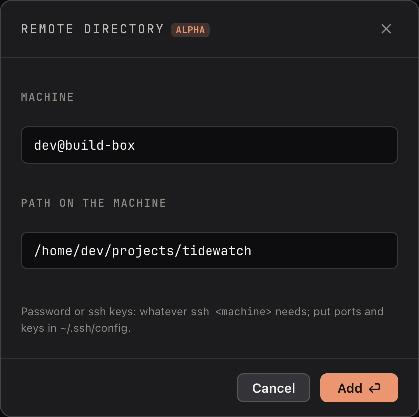

Remote folders (alpha)
Koloft can open a folder that lives on another computer, one you reach with
ssh (a safe way to log in to another computer over the network). Claude
Code runs over there. You watch it and work with it from your Mac. This part is
alpha: it is early, it works, and it still has gaps. The ones
we know are listed below.
Add one
Click the Add workspace button (the folder with a plus) at the top of the window, then
pick Remote directory…. Koloft asks for two things:
- Machine:
user@host, or a name from your ssh settings - Path on the machine: the full path, starting with
/, such as/home/me/project

Keys set in ~/.ssh/config work everywhere. A password works too: type it
once in a tab, and Koloft's own checks use that login after that.
What happens there
Claude Code runs on the other machine. The account it uses comes from
the pool on your Mac. Its transcripts (the written record of
each session) stay there, and rsync (a tool that copies files) brings
copies back, so the sessions list reads like a folder on your Mac.

your Mac the other machine +-----------------+ +------------------+ | Koloft | | tmux | | | ssh | +------------+ | | the tab | <------> | | claude | | | | | +------------+ | | account it | | | | picked | -------> | claude uses it | | | | | | copies of | rsync | transcripts | | transcripts | <------- | (the real ones) | | | | | | | v | | | | sessions list | | | +-----------------+ +------------------+
- Claude runs inside
tmux(a program that keeps a terminal going after you leave). If the link drops, Claude keeps working. - If the machine is missing
claude,tmuxorrsync, Koloft installs them over the same link (tmuxandrsyncmay ask for that machine's sudo password, the admin password). - It also fetches Node, only for the status line. If that fails, the session still runs, just without a status line.
- The first session on a machine takes a few seconds longer:
claudefetches its own settings once.
The Workbench there
The Workbench works on a remote folder too. Its files, its changes, the editor and the shell are all the machine's, not your Mac's.
Not there yet
- Images and PDFs (document files) from the machine do not show a preview.
- An agent's
open <url>does not reach the Workbench. - The agent cannot drive your web tabs. See Agents can use Koloft too.
- The agent does not get the
koloftcommand. - No Codex yet. A remote folder runs Claude Code only.
- The folder menu has no Fetch origin and no Reveal in Finder. It offers Copy path instead.
- Koloft does not check whether the folder's branch is behind its git remote.
next page -> Install, update, what it talks to